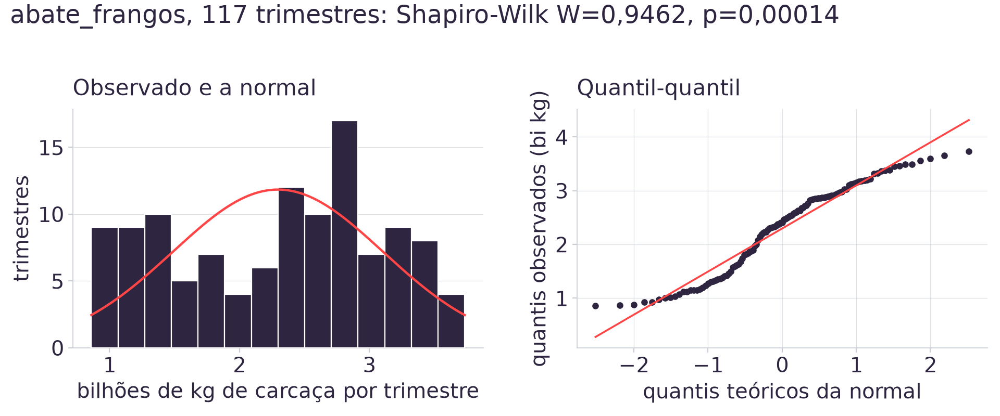

08h00 · 10h00
Autoestudo na Adalove: pré-processamento, ETL e ELT, adequação de variáveis e seleção de característica [5].
10h00 · 10h15
Daily e abertura da Sprint 2 (planning em 17/08). Cada dupla relata em que ponto ficou a EDA da própria série.
10h15 · 12h00
Três blocos de 30 minutos (integração, defasagem e sazonalidade, codificação e seleção), cada um com teoria, prática em duplas e correção rápida. Fecha com o teste de normalidade da ART.5.
Três coisas, e a terceira é a que hoje resolve:
1. as cinco séries carregadas em DataFrame, com
describe() conferido contra dados/README.md;
2. o mapa cruzado das cinco: leite tem sazonalidade forte, frango é quase linear, bovinos tem o salto de 2005;
3. isna() devolveu zero nas cinco, e
a escolha entre fillna() e dropna() ficou registrada como
assunto da Aula 04.
Pergunta disparada:
o TAPI da LDC proíbe modelo de série temporal e a base é trimestral. O que significa "prever com defasagem" nessas duas condições?
A resposta exige uma tabela só, em que o passado de cada série apareça como coluna da linha do trimestre corrente. Montar essa tabela é o trabalho de hoje.
Extract
tools/baixar_dados.py chama a API do SIDRA e filtra os marcadores de
ausência do IBGE. É a única etapa que depende de rede [1].
Load
Os cinco CSVs de dados/, crus, uma série por arquivo, versionados. Faz
o papel do data lake do case.
Transform
O que a aula de hoje faz: junção, defasagem, codificação e escala. O resultado é a base analítica, o data warehouse deste projeto.
O acervo carrega o dado cru antes e transforma depois, e essa ordem é o que define ELT. A consequência prática aparece hoje: a transformação pode ser refeita quantas vezes for preciso sem baixar nada, porque o dado cru continua no repositório.
base = None
for nome in SERIES:
col = (pd.read_csv(f"../dados/{nome}.csv")
[["periodo", "valor"]]
.rename(columns={"valor": nome}))
base = col if base is None else base.merge(
col, on="periodo", how="inner")
base.shape
# (117, 6)pd.merge [2] precisa de três decisões, e só a primeira é óbvia:
1. a chave. periodo, presente nos cinco arquivos, com
o mesmo formato "1997-T1".
2. o tipo. inner mantém só o período que existe nas
cinco. outer mantém todo período que exista em pelo menos uma.
3. o nome das colunas. Sem o rename, cinco colunas
valor colidem e o pandas devolve valor_x e
valor_y.
- Montem a base larga com
how="inner"e anotembase.shape. - Refaçam a mesma junção com
how="outer"e anotembase.shapede novo. - Rodem
base.isna().sum()na versãoouter. Quantos ausentes aparecem, e em quais colunas? - Antes da correção: de onde vem essa diferença de linhas? A resposta está no
countque vocês calcularam na Aula 03.
base.isna().sum() # how="outer"
periodo 0
abate_bovinos 40
abate_suinos 40
abate_frangos 40
producao_ovos 0
producao_leite 40producao_ovos começa em 1987-T1; as outras quatro,
em 1997-T1. São dez anos, 40 trimestres, em que só existe ovo.
São os primeiros valores ausentes reais do acervo, e a origem deles é a decisão de junção que a dupla acabou de tomar.
dropna() devolve exatamente as 117 linhas do inner.
fillna(0) mentiria: afirmaria que o Brasil abateu zero boi em 1990.
fillna(method="bfill") inventaria produção que ninguém mediu.
Nesta base, o inner é a escolha certa, e a razão é o modelo: uma linha de
treino com quatro colunas vazias não ensina nada ao regressor da Aula 05.
O TAPI da LDC proíbe modelo de série temporal (ARIMA, Prophet e afins). Um regressor tabular, porém, não sabe que a linha de cima é o trimestre anterior: para ele, as 117 linhas são independentes e a ordem não significa nada.
A ponte entre as duas coisas é a feature de defasagem: colocar o passado na mesma linha do presente, como coluna. É o que a ADR-003 fixou como decisão de arquitetura do case [7].
Duas defasagens, dois motivos diferentes:
valor_t-1, o trimestre imediatamente anterior, carrega a inércia de
curto prazo.
valor_t-4, o mesmo trimestre do ano anterior, carrega o ciclo anual:
compara T3 com T3, sem misturar estação do ano.
Sem t-4, o modelo compara o inverno com o verão anterior e chama a
diferença de tendência.
base["frangos_lag1"] = base["abate_frangos"].shift(1)
base["frangos_lag4"] = base["abate_frangos"].shift(4)
periodo abate_frangos frangos_lag1 frangos_lag4
1997-T1 859.853.089 NaN NaN
1997-T2 867.003.479 859.853.089 NaN
1997-T3 926.331.791 867.003.479 NaN
1997-T4 972.151.812 926.331.791 NaN
1998-T1 880.739.407 972.151.812 859.853.089
1998-T2 931.106.052 880.739.407 867.003.479
len(base.dropna()) # 113shift(4) desce a coluna quatro posições, então as quatro primeiras
linhas não têm passado suficiente e viram NaN [2].
Esses quatro ausentes têm origem diferente dos 40 do bloco anterior: aqui o dado
existe, o que falta é histórico anterior ao início da série. dropna()
resolve os dois casos, e deixa 113 linhas de treino.
A regra que não pode ser quebrada: o argumento de
shift é sempre positivo. shift(-1) traz o futuro para a linha
de hoje, e um modelo treinado assim acerta em teste e falha em produção, porque em
produção o futuro ainda não aconteceu.
- Criem
lag1elag4da série da sua dupla sobre a baseinner, comshift(). - Contem os
NaNde cada uma das duas colunas novas. Confirmem que são 1 e 4, e expliquem por quê. - Meçam a correlação de cada defasagem com o valor do trimestre corrente:
base["serie"].corr(base["serie_lag1"]). - Qual das duas defasagens correlaciona mais com o presente na sua série? Anotem o número, com duas casas.
correlacao com abate_frangos no trimestre corrente, 113 linhas
frangos_lag1 +0,9944
frangos_lag4 +0,9910
abate_suinos +0,9705
producao_leite +0,9539
producao_ovos +0,9445
abate_bovinos +0,9200As duas defasagens lideram, o que era esperado. O que não era esperado é que as outras quatro séries, medindo animais diferentes em unidades diferentes, também cheguem acima de +0,92. Guardem esse desconforto: o Bloco 3 mostra de onde ele vem.
base["trimestre"] = base["periodo"].str[-1].astype(int)
# A: tres dummies (a quarta e redundante)
d = pd.get_dummies(base["trimestre"], prefix="tri",
drop_first=True)
# B: um par seno/cosseno
base["sen"] = np.sin(2 * np.pi * base["trimestre"] / 4)
base["cos"] = np.cos(2 * np.pi * base["trimestre"] / 4)trimestre é variável categórica nominal: T4 não é
"quatro vezes" T1. Passar o número cru ao modelo afirmaria essa ordem falsa [2].
Regressão do leite sobre tendência mais sazonalidade:
só tendência: R² = 0,8896
tendência e 3 dummies: R² = 0,9194
tendência e seno/cosseno: R² = 0,9193
Com quatro trimestres, o par seno/cosseno entrega o mesmo com uma coluna a menos. A vantagem cresce com 12 meses ou 52 semanas.
coluna media unidade
abate_frangos 2,30e+09 kg
abate_bovinos 1,71e+09 kg
abate_suinos 7,84e+08 kg
producao_leite 4,98e+06 mil litros
producao_ovos 6,99e+05 mil duziasAo colocar as cinco na mesma matriz de entrada, a coluna de frango domina qualquer cálculo de distância só por ser numericamente maior.
from sklearn.preprocessing import StandardScaler
X = base[SERIES]
Z = StandardScaler().fit_transform(X)
Z.mean(axis=0) # ~0 nas cinco
Z.std(axis=0) # 1 nas cincoA padronização z-score subtrai a média e divide pelo desvio: cada coluna passa a ter média 0 e desvio 1 [4].
KNN, SVM e regularização exigem escala comparável entre as colunas, e são as próximas aulas. Regressão linear funciona sem essa exigência.
- Criem as três dummies de trimestre e o par seno/cosseno na base da dupla.
- Padronizem as cinco colunas de série com
StandardScalere confiram média e desvio do resultado. - Meçam a correlação entre a série da dupla e
abate_frangosduas vezes: sobre o nível e sobre.diff(). - Escrevam a diferença entre os dois números em uma frase. É a pergunta central da seleção de característica de hoje.

As cinco séries crescem ao longo de 29 anos, e duas séries que sobem juntas
correlacionam alto mesmo sem relação entre elas. .diff() remove o nível e
deixa a variação trimestre a trimestre, que é onde está a informação nova.
A correlação entre producao_leite e
abate_frangos é +0,96 em nível e -0,04 em
primeira diferença. O que essa queda indica?

| série | p (nível) | p (diferença) |
|---|---|---|
| abate_bovinos | 0,00077 | 0,21719 |
| abate_frangos | 0,00014 | 0,04224 |
| producao_leite | 0,000003 | 0,00115 |
Em nível, as cinco rejeitam a hipótese nula, com p abaixo de 0,001 [3]:
uma série com tendência de crescimento tem a média mudando ao longo da amostra. Depois
de .diff(), abate_bovinos passa a 0,217 e deixa de
rejeitar. As cinco linhas da tabela estão no material de apoio.
11h45 · 11h55.
notebooks/aula04.ipynb reúne os três blocos de hoje em sequência: a junção
das cinco séries nos dois tipos, as defasagens com shift(), as duas
codificações de sazonalidade, a padronização, a comparação de correlação em nível e em
diferença, e o teste de Shapiro-Wilk das cinco séries.
- Abram pelo Colab (badge na primeira célula) ou localmente, com o repositório clonado.
- A última seção grava a base analítica pronta em memória: é ela que a Aula 05 recebe para treinar o primeiro modelo.
- O desafio no final pede a base completa da série da sua dupla, com defasagem, sazonalidade e escala, mais o valor-p do teste de normalidade dessa série.
ART.3, peso 5
Exploração, Pré-processamento e Hipóteses [6]. A base analítica de hoje é o pré-processamento pedido pela entrega, documentado decisão por decisão.
ART.5, peso 4
Distribuição normal e teste de hipótese [6]. O Shapiro-Wilk das cinco séries é o resultado medido que a entrega exige.
Sprint 2
Aberta em 17/08, fecha em 28/08, com ART.3 (5), ART.4 (3) e ART.5 (4).
O que a dupla leva pronto: a base larga com as cinco séries, as defasagens de 1 e de 4 trimestres, a codificação de sazonalidade escolhida, as colunas padronizadas e o valor-p do teste de normalidade. É essa tabela que a Aula 05 recebe, em 24/08, para treinar a primeira regressão.
- IBGE. Pesquisa Trimestral do Abate de Animais e da produção de ovos e leite, tabelas
1092, 1093, 1094, 7524 e 1086 do SIDRA. Contrato e checagem de sanidade em
dados/README.md. - pandas development team. pandas documentation:
merge,shift,get_dummies,fillna,dropna. - Virtanen, P. et al. SciPy 1.0. Nature Methods, 2020:
scipy.stats.shapiro. - Pedregosa, F. et al. Scikit-learn: Machine Learning in Python. JMLR, 2011:
StandardScalere seleção de característica. - Autoestudos da Semana 03 na Adalove, listados em referencias/aula04.html.
PLANO_DE_ENSINO.md, seção 4: ART.3 peso 5, ART.5 peso 4.docs/adrs/ADR-003(regressão tabular) edocs/adrs/ADR-007(a base analítica a partir das cinco séries do SIDRA).